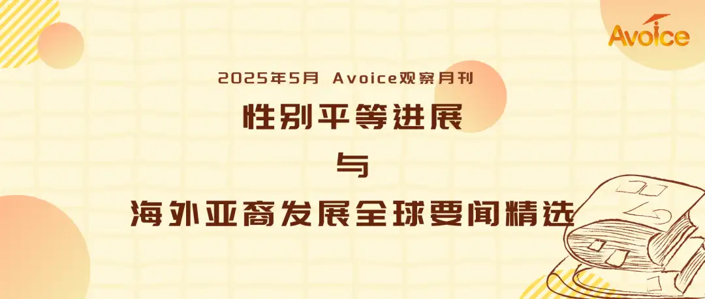

专栏引言：
五月，我们持续关注性别与族裔议题。韩国年轻女性把街头化作抗议剧场，重塑总统选举生态；赫尔辛基火车站再度纪念“北京列车”对妇女进步的先进声音。与此同时，来自五大洲的杰出女科学家和亚裔女性艺术家一起为未来贡献新的思想与突破。然而，对亚裔的仇恨与暴力仍在发生。悉尼与纽约接连发生的仇亚暴力，和数据显示逾半数亚太裔在美仍面临仇恨的现实也警醒我们亚裔面临的困境。也正因如此，102 岁辞世的“亚洲女足之母”Veronica Chan和赖斯大学休斯敦亚裔档案库的口述史收藏，显得弥足珍贵。前者用一生证明了女性值得足球场上的一席之地，而后者用档案纪念亚裔移民，让ta们永远在历史的舞台上存在。
目录
Table of Contents
一、性别平等
News on Gender Equality
韩国女性选民在总统选举中占领重要地位
2025年度“欧莱雅—联合国教科文组织杰出女科学家奖”五位全球获奖者公布
纪念第四次世界妇女大会活动在赫尔辛基举办
二、针对亚裔的暴力
Crime against Asian Community
悉尼数名青少年围殴亚裔夫妻
纽约15名成年人围殴两位华裔青少年女性
2024年逾半数亚太裔在美遭受仇恨侵扰
三、亚裔话语权
Voice of Asian
亚洲女子足球之母Veronica Chan去世
亚裔女性在艺术界崭露头角
休斯敦亚裔档案库的诞生与使命
01
性别平等
News
韩国女性选民在总统选举中
占领重要地位
去年12月，前总统尹锡悦因短暂宣布戒严、被指“煽动厌女情绪”而引发大规模示威，最终在2025年4月被宪法法院罢免。示威中，20岁出头的女性是最活跃且主要的群体，ta们用 K-pop 口号和荧光棒把街头变成抗议舞台，显示出女性在韩国公共议题中的动员力。
而今年参加选举的两位候选人李在明与金文洙都在回避女性议题，其中金文洙强调“男女兵役平等”、给服完兵役的男性更多职场优惠，并把生育率低迷归咎于女性“宁愿养狗不愿生娃”，曾聘用被视为反女权的人士参与竞选，引发女性群体反感。李在明民调领先，口头上承认女性遭遇结构性歧视，并提出打击恋爱暴力、数字性犯罪、要求企业公开性别薪资差距等承诺。但ta避免触碰更具争议的“反歧视法”“无同意即强奸”等议题，以免刺激自认为“被反向歧视”的年轻男性选民。
在如今严峻的性别不平等现状面前，许多受访女性表示“只能在差与更差之间做选择”。不少人会投票给李在明，仅仅因为“至少能阻止保守派倒退”，并抱持“如果ta做得不好，女性还能再次走上街头”的心态。尽管女性的要求被边缘化这一绝望事实成立，韩国女性选民在推翻尹锡悦以及新一届总统选举中逐渐发出掷地有声的政治声音，将女性问题提升成国民核心诉求。
消息来源：
Choe, S.-H. (2025, May 26). As South Korea Gets Ready to Vote, Women Don’t Like the Choices. The New York Times.
https://www.nytimes.com/2025/05/26/world/asia/south-korean-women-election.html
News
2025年度“欧莱雅—联合国教科文组织
杰出女科学家奖”五位全球获奖者公布
“欧莱雅-UNESCO接触女科学家奖”自1988年设立，至今已经是第27届，每年表彰 5 位分别代表非洲及阿拉伯国家、亚太地区、欧洲、拉丁美洲与加勒比、与北美的杰出女科学家。
今年的获奖者分别是，非洲及阿拉伯国家：Priscilla Baker教授来自开普敦大学，ta开创了高灵敏度微传感器检测环境污染物，应用于药品、食品、健康与能源。 亚太地区：Xiaoyun Wang教授来自清华大学，ta揭示经典散列函数漏洞并推动新国际标准诞生，保障银行卡、密码和电商安全。欧洲地区：Claudia Felser教授来自德国马克斯-普朗克研究所，ta发现新磁性材料，奠基“拓扑量子化学”，助力数据存储与绿色能源。拉丁美洲与加勒比：Maria Teresa Dova教授 来自拉普拉卡国立大学，ta参与希格斯玻色子发现、推动阿根廷在高能物理领域取得国际地位。北美：Barbara Finlayson-Pitts教授来自加州大学尔湾分校，ta揭示光化学烟雾形成新机制，成果被写入空气质量政策。
尽管现在全球女性研究人员比例仅31.1%，性别差距仍然明显，但是该计划已支持共计 4700 余名女科学家，其中不乏诺贝尔奖获得者；且通过奖学金、导师计划等方式，帮助女性突破职业瓶颈。在应对气候变化、公共卫生、数字安全等全球挑战领域离不开女性科研人才，各界需要持续投入资源，营造更具包容性的科研生态。
消息来源：
Five Exceptional Researchers win the 2025 L’Oréal–UNESCO For Women in Science International Awards. (2025, May 26). Unesco.
https://www.unesco.org/en/articles/five-exceptional-researchers-win-2025-loreal-unesco-women-science-international-awards
News
纪念第四次世界妇女大会活动
在赫尔辛基举办
过去的北京列车纪念活动“30 Years, 1 Journey”于 2025 年 5 月 8 日在赫尔辛基中央火车站举行，重申1995年《北京宣言和行动纲要》的承诺。芬兰政要、联合国妇女署地区主任及来自欧洲和中亚的200 名政策制定者、活动家和青年倡导者呼吁，面对全球性别平等遭遇的反扑，必须尽快在消除暴力、减贫、数字包容、气候正义和女性领导力等议题上制定并落实 Beijing+30 行动议程。现场同步启动的 #JourneyForEquality 展览将持续至 5 月 22 日，引导每日约 20 万名访客回顾地区妇女运动的历程。
发言人通过跨代对话凸显“旅程未完”的主题：从推动哈萨克斯坦家暴刑事化的网红 Aitbek Amangeldi，到在乌克兰战区为性暴力幸存者提供法律援助的律师 Khrystyna Kit，再到倡导女孩决策权的芬兰青年 Adina Nivukoski，都强调体系性变革仍需各界合力。大会以此警示，如果维持当前步伐，全球实现性别平等恐需三百年；唯有政府、民间社会与年轻一代携手，将性别平等置于所有政策核心，方可把纪念化为切实行动。
消息来源：
30 Years, 1 Journey: Activists and trailblazers join a historic event in Helsinki to march forward for gender equality. (2025, June 30). UN Women – Europe and Central Asia.
https://eca.unwomen.org/en/stories/news/2025/06/30-years-1-journey-activists-and-trailblazers-join-a-historic-event-in-helsinki-to-march-forward-for-gender-equality
02
针对亚裔的暴力
News
悉尼数名青少年围殴亚裔夫妻
近日，在澳大利亚悉尼 Eastgardens 社区发生一起仇亚袭击： 一对在街头说中文的华人夫妻，被至少 7 名年龄 11–16 岁的当地青少年围殴、吐口水并拳脚相向。42 岁的华人女子被按倒在地持续近一分钟，脸部、背部和四肢多处受伤，并出现视力受损和指骨骨折；其丈夫和一名试图帮助的路人也遭波及。警方随后逮捕并起诉 7 名未成年人，但ta们已获保释并将在儿童法庭受审。事件视频在社交媒体疯传，引发澳洲华人和留学生强烈愤怒与请愿，亦促使中国驻澳使馆发表谴责声明，敦促当地当局保护华人安全。
类似针对亚裔、尤其是华人的青少年群体袭击在悉尼并非孤例。这反映出当地长期存在的种族歧视与执法宽松问题。调查数据显示，五分之四的亚裔澳大利亚人曾经历种族歧视。作者呼吁受害者积极报案、社群继续向警方和媒体施压，强调“华人也不是好惹的”，并建议短期内留学生和华人夜间结伴出行，以防再度成为目标。
消息来源：
Weixin Official Accounts Platform.
https://mp.weixin.qq.com/s/7bkDwr64NfCNv0SBr9kNxw
News
纽约15名成年人围殴
两位华裔青少年女性
5月2日下午，在纽约皇后区一名陌生年轻女子以“帮找手机”为由将两名刚打完篮球的华裔青少年女性诱至树林，ta们随即遭到约 15 名持铁棒少年的长达两小时围殴、剃发羞辱，并被拍视频炫耀；Mary 后脑被棒球棍重击当场昏迷，姐妹俩的手机、球鞋和外套亦被抢走，直到路人报警警察才赶到。
案件仅以“抢劫案”立案，警方暂时逮捕两名嫌犯、其余仍在逃，引发受害者家属与社区质疑少年法对未成年人过度宽松、执法部门倾向“降格处理”。报道并列举近年美国各地多起亚裔青少年遭群殴录像炫耀的案例，指出社交媒体放大了“匿名狂欢”效应，使暴力在流量驱动下娱乐化，少年施暴成本低而愈加肆无忌惮。
华裔议员、社团与心理专家纷纷谴责暴行，呼吁完善惩治机制、加强青少年自卫教育，并向受害家庭提供法律与心理支持。 受害者的母亲在新闻会上哭诉女儿“对世界的信任被撕碎”，社区家长群流传“孩子在外永远不能掉以轻心”的提醒，凸显亚裔面对系统性冷漠与公共空间脆弱性的恐惧和愤怒。
消息来源：
Weixin Official Accounts Platform.
https://mp.weixin.qq.com/s/io6_hgIEM7xxKFnI2BOkoQ
News
2024年逾半数亚太裔
在美遭受仇恨侵扰
一项Stop AAPI Hate 与芝加哥大学 NORC 研究机构的最新调查显示，2024年有53%的亚裔和太平洋岛民在美国遭遇过基于族裔的仇恨行为，比例较2023年的49%略有上升。受访者普遍认为大选期间的反移民言论与激烈分裂氛围助长了排亚情绪。
报告指出，受害者普遍不报案：有 40%甚至未向亲友透露。涉及威胁或暴力等可能违法的事件中，66% 未向执法部门举报，原因多为“报也没用”。与此同时，特朗普上任后美国政府一系列针对亚裔的行动，例如推动取消中国学生签证、攻击出生公民权和副总统万斯的言论亦被施暴者在校园、公共交通等场所模仿。
尽管形势严峻，82% 的受访者依然对社群共同抗击种族主义抱有信心。大部分人在过去一年积极参与反歧视活动，并强调跨族裔团结的重要性。Stop AAPI Hate 共同创始人蔡玉榕呼吁各界“持续而有决心地”反击政策倒退，否则权利或将被一步步剥夺。
消息来源：
Reporter, G. S. (2025, June 2). Half of Asian Americans and Pacific Islanders faced hate in 2024, study finds. The Guardian.
https://www.theguardian.com/us-news/2025/jun/02/aapi-hate-study
03
亚裔话语权
News
亚洲女子足球之母
Veronica Chan去世
亚洲女足之母陈姚金（Veronica Chan Yiu-kam）于 2025 年 6 月 1 日清晨在天水围家中逝世，享年 102 岁。陈姚金创立香港女子足球协会（HKLFA），1968 年又携马来西亚、 新加坡成立亚洲女子足球联盟并出任首任主席。其后促成 1975 年首届亚洲女子足球锦标赛在港举办。ta一生倾注财力与心血推广女足，去年在曼谷举行的第 34 届亚足联大会上获颁 “终身成就奖”，早在 2003 年亦曾获时任国际足联主席布拉特誉为“世界女足之母”。
除女足外，陈姚金亦活跃于香港男子职业赛场，先后拥有元朗、流浪、Caroline Hill 与海峰等甲组球队，被誉为“全球首位女班主”。ta曾斥资包直升机将马来西亚门将周志强空运到香港大球场出战 1972 年对桑托斯的友赛，其魄力与慷慨在港足史留下佳话。香港足总及多位球界人士缅怀ta“把大半生、财富与精力都奉献给香港与亚洲足球”，并表示将继承其推广女足的愿景。
消息来源：
Chan, M., & Chan, M. (2025, June 1). Veronica Chan, ‘the mother of Asian women’s football’ dies, aged 102. South China Morning Post.
https://www.scmp.com/sport/football/article/3312637/veronica-chan-mother-asian-womens-football-dies-aged-102
News
亚裔女性在艺术界崭露头角
这篇 Artsy 专题文章由 Mimi Wong 撰写，借 2025 年亚太裔传统月（AAPI Heritage Month）之机，请策展人兼画廊总监 Kathy Huang 推荐了八位值得关注的“新生代亚裔美国女性艺术家” 。Huang 指出，近年亚裔艺术家在纽约等大城市不断崭露头角，创作主题也不再局限于“身份叙事”，而是延伸至抽象、材料实验与跨学科研究，映射ta们多元的日常与文化经验。
Ragini Bhow以“哥特式”几何绘画与雕塑探讨感知与空间；Shuyi Cao在雕塑与装置中糅合中西自然与科学元素；Kyung-Me用灰阶工笔般的室内素描营造幽微心理场景；Wen Liu把中药材、树脂与陶土炼成身体般的墙面雕塑；Anna Ting Möller用康普茶皮革、真丝等有机材料思考母性与身份；Jacqueline Qiu以织布机与天然纤维编织“可触的风景”；Huidi Xiang把漫画形象与工业材质解构为幽默雕塑；Ang Ziqi Zhang受电子乐启发，以层叠符号与荧光色构筑“节拍式”抽象绘画。
这些艺术家虽源自不同亚裔背景，作品却既可被观众纯粹欣赏，又在更深层折射移民、性别与全球化体验。
消息来源：
Wong, M. (2025, May 21). 8 rising Asian American women artists to watch. Artsy.
https://www.artsy.net/article/artsy-editorial-8-rising-asian-american-women-artists-watch
News
休斯敦亚裔档案库的诞生与使命
赖斯大学赵氏亚洲研究中心（Chao Center for Asian Studies）的历史学者赵安妮（Anne Chao）创建并扩充 “休斯敦亚裔档案库” （Houston Asian American Archive, HAAA），以保存大休斯敦地区亚裔移民的口述史与珍贵文献。赵安妮指出，虽然休斯敦拥有全美规模最大的亚裔社区之一，却长期缺乏系统性的史料保存。自十多年前起，ta与学生、实习生一起采访受访者、搜集相片与文件，目前已累积 500 余段影音口述史和大批实物档案，部分馆藏因数量庞大而搬离校内图书馆保存。
报道还举例介绍 HAAA 收藏的典型故事：开创“华人杂货—白领”双轨发展的纪氏家族、逃离越南的船民群体，以及日裔企业家近藤家族如何从二战拘留营中重新站起并在休斯敦拓展寿司业务。赵安妮希望继续扩大收藏面向，让更多亚裔族群的日常与奋斗被看见，同时帮助年轻志愿者在记录ta人经历的过程中重建自身身份认同。
消息来源：
Shay, M. (2025, May 21). Houston’s Asian American history preserved at Rice University. ABC13 Houston.
https://abc13.com/post/researcher-preserves-history-asian-americans-rice-universitys-chao-center-studies-houston/16483131/
* 注：本文所收录的信息仅用于分享交流，不代表Avoice的立场和观点
撰稿｜学术研究处
排版/封面｜杜婉婷